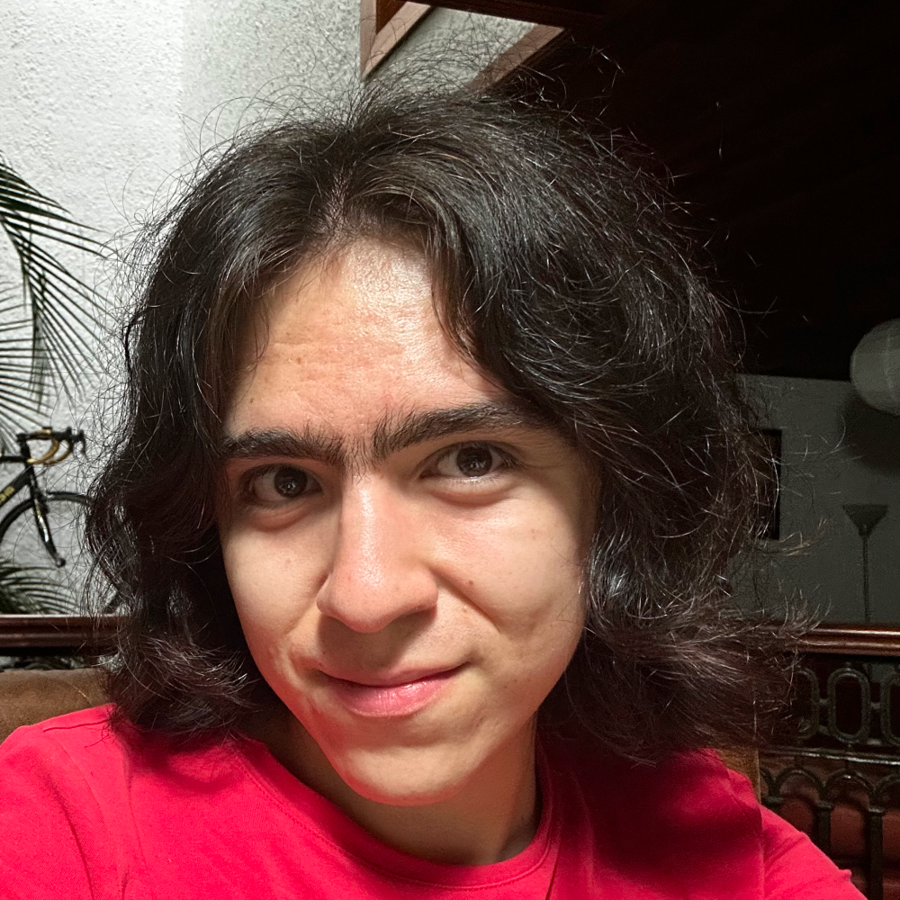

Si estás interesade en ver esta página en español, da clic aquí
Hi! My name is Sofía, welcome to my website.
I am a Data Scientist student and recreational writer living in Guadalajara, my favorite place in the whole world. I am 21 years old.
I have been interested in computers for as long as I can remember (my mom says I learned how to type on a keyboard before I could write on paper with a pencil). Like all good children, I learned to tinker with computers by installing Minecraft mods, which eventually led to a broader interest in understanding how computers work and how they serve us as humans, and their role in wider society. I also bring this perspective to my role as a data scientist.
I am also very interested in both web development (as you can clearly see, I am still a novice) and standard software development. I know how to write Python, C, Java and a little bit of JavaScript and Bash.
I also love music, and have actually been taking note of every single full album I've heard since 2022. If you are interested in that list, you can check it out here.
I also really like to write about anything that interests me, both tech and non-tech related. Besides this website, I have a small Substack publication of the same name where I cross-post most of my stuff in Spanish. Speaking of which...
Any of my posts, here or on any other website or social media, express views of my own, and do not reflect the views of any past, present or future employer or educational institution.
Below is a list of random stuff I use every day that I really like:
Arch Linux on both my laptop (where I use Hyprland) and desktop (where I use Manjaro). And definitely not Omarchy.
Obsidian, my favorite note taking software by far. It's free and you can host it anywhere. Shoutout to this video for getting me started with Obsidian nearly two years ago.
Chuck Taylor Converse, my shoe of choice. I have red and black ones and I have worn them daily for years.
Sony WH-CH720Ns, my headphones of choice for nearly two years now. They may not be the best Sony has to offer but I love them and I use them multiple hours each day, whether I am sitting on my desk working, playing videogames or listening to music on campus.
Apple Watch Series 9. Definitely a luxury but I've had mine for nearly three years and it has made me more conscious of my health and that is priceless.
Keychron K8 Mechanical Keyboard. I've never been so enamored with a keyboard until I got this one last year. Even if I had unlimited funds to change everything on my desk, I wouldn't change the keyboard.
Logitech G502 Hero. I had my original G502 for 9 years until it broke last year. I got another one and expect it to last me another 9 years.
Zed, my editor of choice for both Java and C programming. I still use VSCode for web development and Python tho.
Nintendo Switch Pro Controller. I got this controller as a gift nearly 6 years ago and is still standing strong, and I've never had issues with it, which I can't say of any other Switch controllers I own. I never understood the power of having gyro on a controller until I played
Breath Of The Wild, not "something I use every day" but it is my favorite video game ever made so that has to count for something.